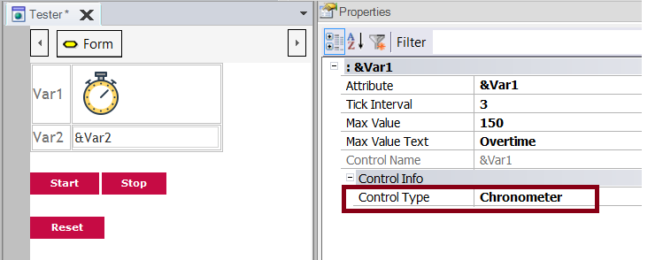
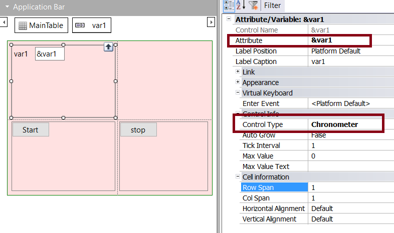

The Chronometer control gives you the possibility to execute an event after a certain time or simply to show a chronometer on the screen. This could be useful in applications like quizzes (for timing the answers), applications that show something on the screen for a while and hide it automatically, among other functionalities. Warning: As of Android 8.0, Chronometer control could not work properly when it is invisible. Consider set height of control row with 0 dips in order to achieve the same aim.
Using the controlThis control can only be applied to Attribute/Variables of numeric type. After dragging the variable to the form, you should set its Control Type property to "Chronometer". It is valid for both Web and Mobile applications as well. Web Panels Panels for Smart Devices or WorkWithDevices Properties
Methods
Events
Example
Event &Var1.Tick
&count +=1
if &count = &Somevalue
//do something
endif
EndEvent
Event 'Start'
&Var1 = 55
&Var1.MaxValue = 60
&Var1.Start()
EndEvent
ScopeGenerators: Android, Angular, Apple, Java, .NET, .NET Core See AlsoSD Chronometer Control - Android Sample
|
| Backlinks |
| Control Type property |
| SD Component control |